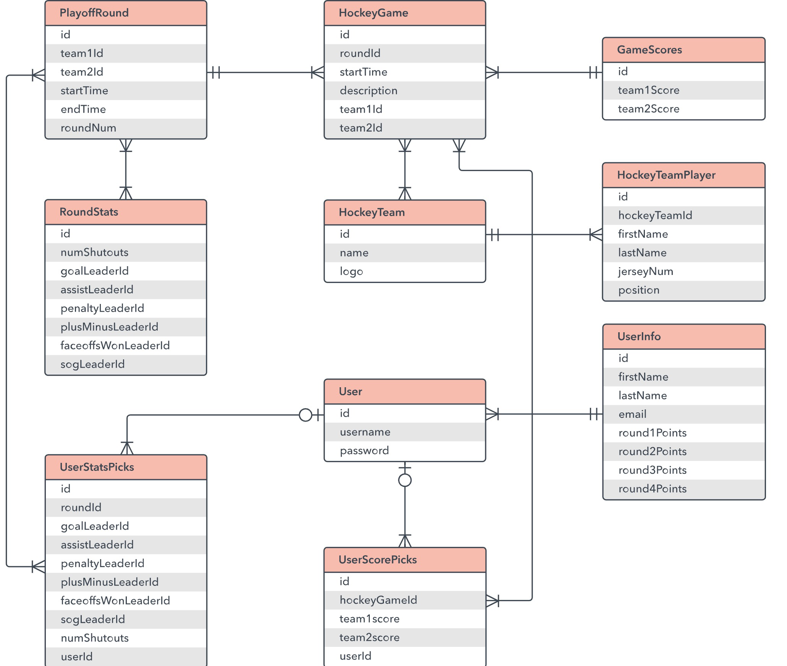
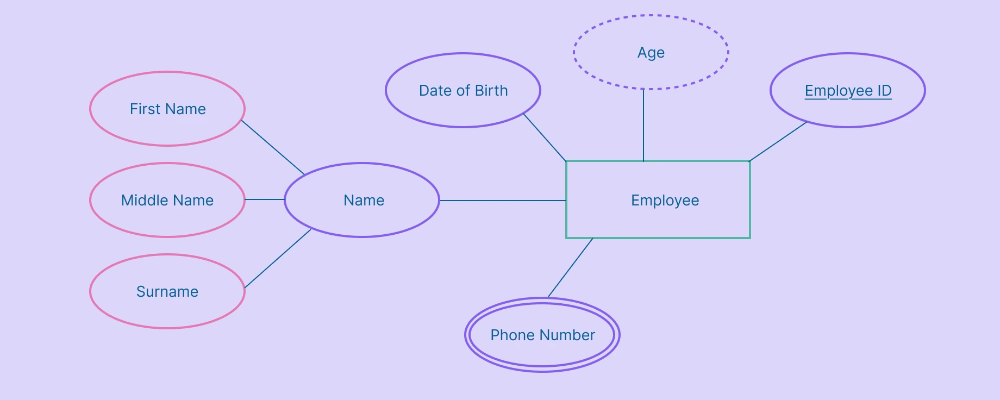
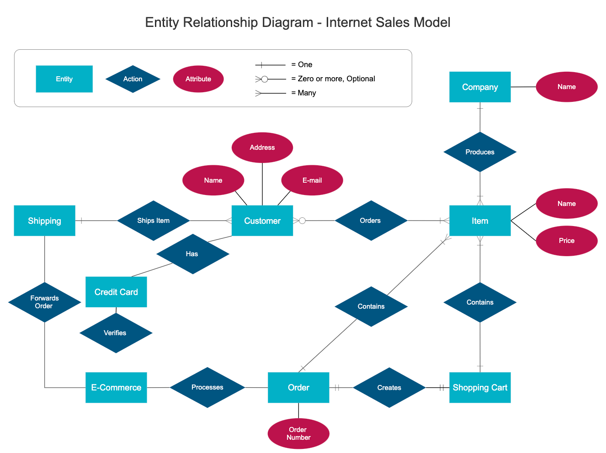
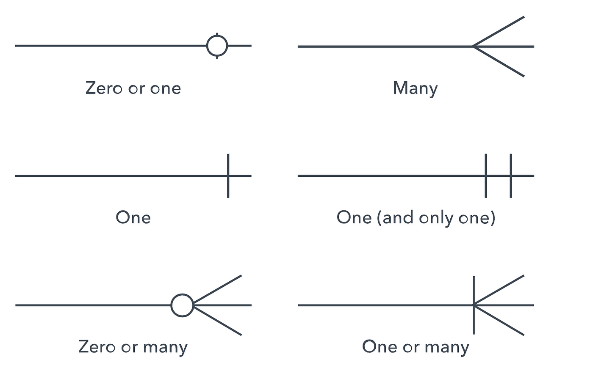

ERD ehk Entity-Relationship Diagram on andmebaaside modelleerimise tööriist, mis kirjeldab süsteemi andmestruktuuri, andmeobjekte (olemite), nendevahelisi seoseid ning omadusi. ERD annab visuaalse ülevaate sellest, kuidas andmed on loogiliselt omavahel seotud ja kuidas neid saab andmebaasitabelitesse teisendada.
ERD-sid kasutatakse peamiselt andmebaaside analüüsimisel, planeerimisel ja disainimisel. Neid rakendatakse:
Olemid esindavad andmeobjekte (nt Klient, Tellimus, Toode). ERD-s joonistatakse need tavaliselt ristkülikuna.

Atribuudid on olemite omadused (nt kliendi nimi, telefon, toote hind). ERD-s tähistatakse neid ovaalidega.

Suhted näitavad, kuidas olemid omavahel seotud on. ERD-s tähistatakse neid rombikujuga või Crow’s Foot stiilis joonte ja märkidega.

Ühendusjoonte otsad näitavad seoste kardinaalsust. Peamised tüübid:

Kui ERD teisendatakse andmebaasi, muutub iga olem tabeliks. Olemitabel sisaldab:
Primaarvõti on tabeli peamine identifikaator. See peab olema:
Väivõti viitab teise tabeli primaarvõtmele ja loob seose tabelite vahel. Seda kasutatakse 1:M ja M:N seoste realiseerimiseks.
Koosvõti koosneb mitmest atribuudist, mis üheskoos moodustavad unikaalse identifikaatori. Kasutatakse sageli seostabelites (nt Tellimus_Toode tabelis: tellimus_id + toode_id).
„Key” tähendab üldiselt mis tahes välja või väljade kombinatsiooni, mida kasutatakse kirje tuvastamiseks või seostamiseks. Kõik PK, FK ja Composite Key on võtmete alamtüübid.
ERD teisendamisel andmebaasi muutuvad võtmed tabeli funktsionaalseks osaks:
ERD annab visuaalse mudeli, kuid tabelid ja võtmed rakendavad selle mudeli andmebaasis.
Seega ERD tagab, et andmebaasis on korrektsed seosed ja vältitakse dubleerimist.